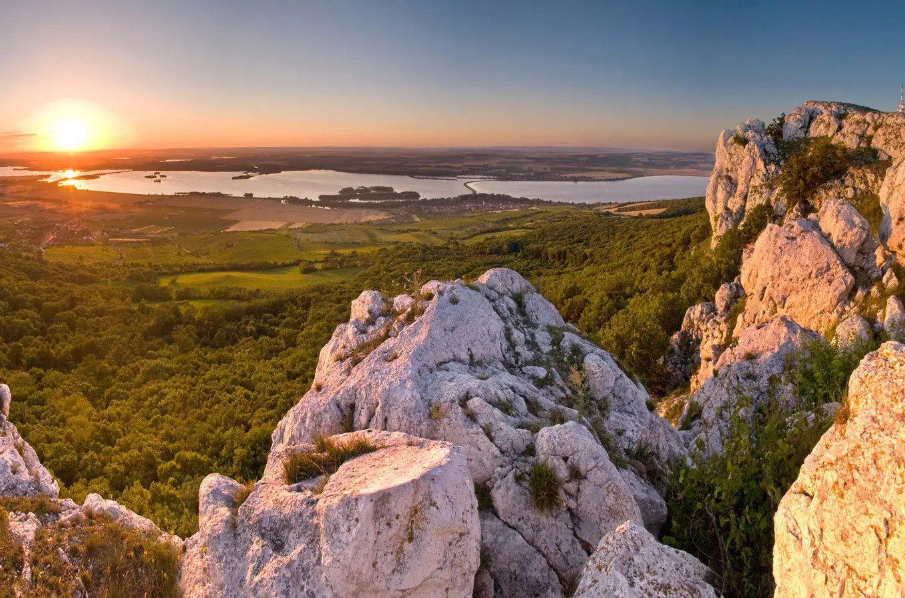
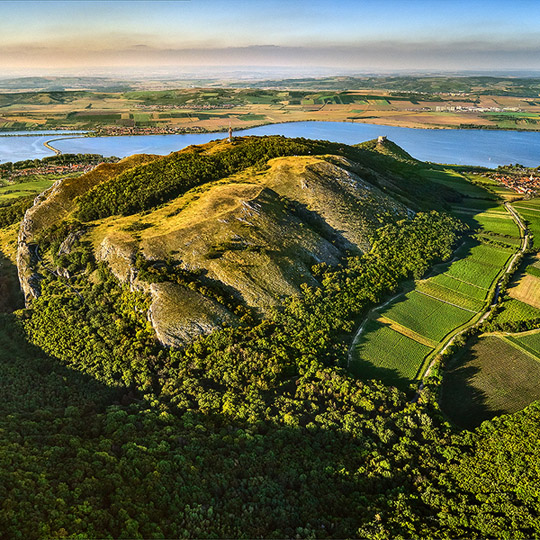
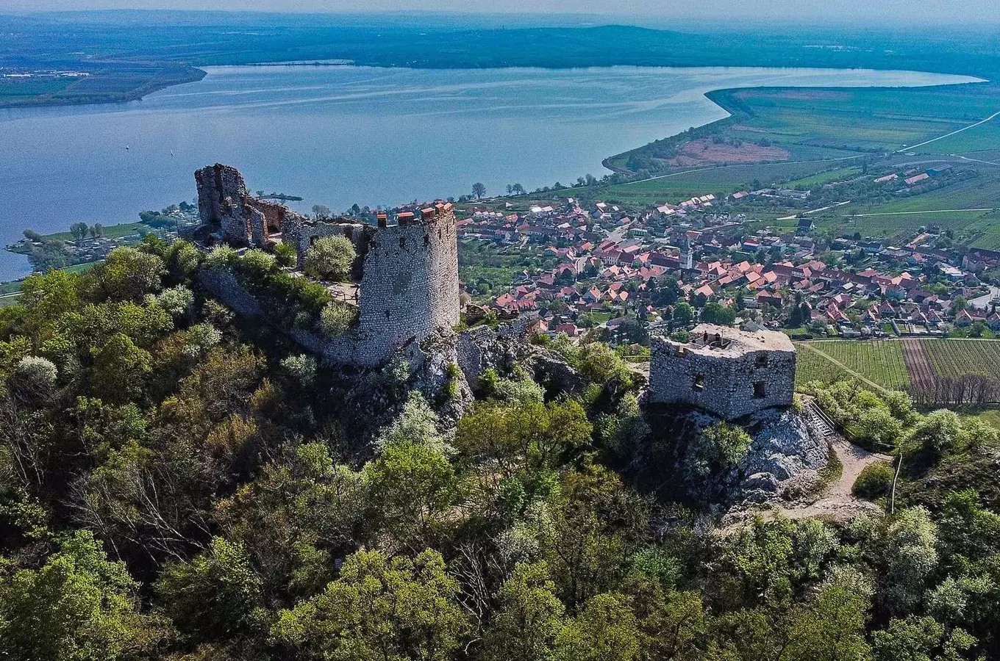
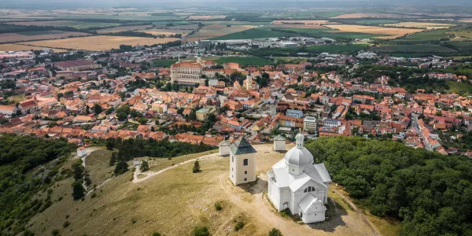

A beautiful region in South Moravia, known for limestone hills, vineyards, historic villages and views over the surrounding countryside.
Pálava is a scenic region in southern Moravia, famous for its white limestone hills, vineyards and warm climate. The landscape combines open countryside, traditional villages and nature reserves.
The area is popular with hikers, cyclists and visitors who want to explore the South Moravian countryside. Its unique natural enviroment and historic landmarks make Pálava a distinctive destination in Czechia.

Děvičky Castle is a medieval ruin standing on a rocky hill above Nové Mlýny reservoirs. Its remains are on of the most recognizable landmarks of The Pálava region.
A hiking trail leads to the castle, where visitors can enjoy wide views of the surrounding hills, vineyards and water. The ruins also offer a glimpse into the region's medieval history.

Svatý Kopeček is a distinctive hill above the town of Mikulov, known for its religious landmarks and beatiuful views. A path leads up to the pilgrimage site, which includes chapels and a small church.
From the hill, visitors can look across Mikulov, the surrounding vineyards and the countryside near the Austrian border. It is a popular place for a short walk and enjoying the landscape.

Pálava offers plenty of places to explore, including hiking trails, limestone hills historic ruins and traditional South Moravian villages. Visitors can also discover Mikulov and walk through the vineyards that shape the local landscape.
The combination of unique nature, historic landmarks and rural scenery makes Pálava a memorable destination for anyone who wants to expierence a different side of Czechia.